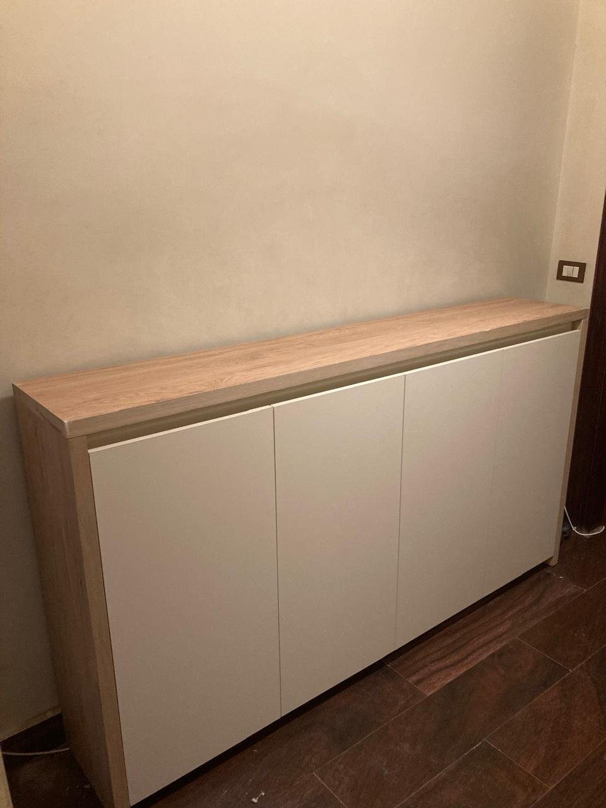
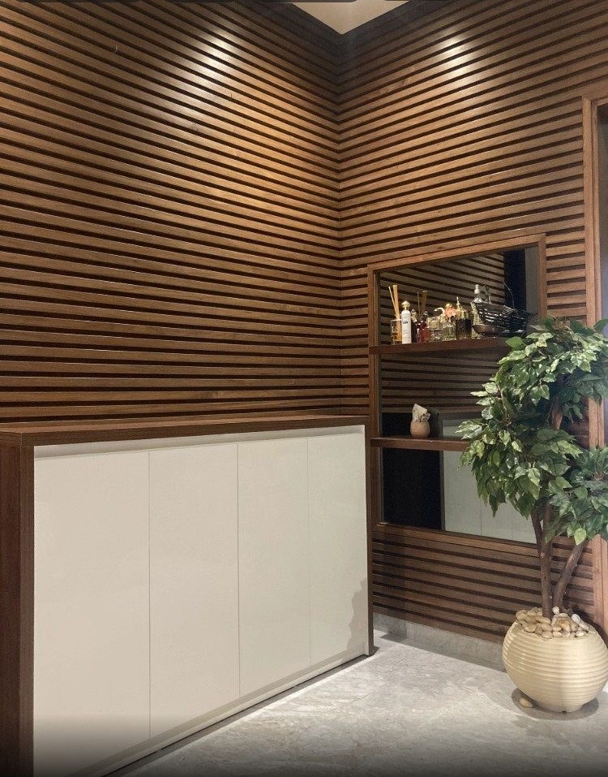

القص — Cropping
Crop Tool (C)
الأبعاد
960×1280→944×850
اللي اتشال
34.7%
شلنا الحيطة الفاضية من فوق (430 بكسل) وحلق الباب الغامق من اليمين (16 بكسل). المنتج بقى مالي الكادر، والتكوين بقى أفقي زي شكل القطعة.
+ضيف سكرين شوت Photopea وإطار القص ظاهر
مشروع تطبيقي — مبادئ الحاسب الآلي · Digital Product Presentation Poster
إزاي صورة موبايل لقطعة أثاث في طرقة بإضاءة صفرا بقت لوحة تقديمية — خطوة بخطوة.
 اللوحة النهائية
اللوحة النهائية
رحلة المشروع
الفريق — Team Contribution Record
| الدور | الاسم | الفترة | اللي نفّذه فعلاً |
|---|---|---|---|
| قائد المجموعة | [الاسم] | [صباحي/مسائي] | اختيار المنتج، توزيع المهام، مراجعة الاكتمال قبل التسليم |
| مسؤول الصور | [الاسم] | [صباحي/مسائي] | دراسة الصورة، القص، تغيير الأبعاد، الإضاءة والتشبع، فصل الخلفية |
| مسؤول التكوين | [الاسم] | [صباحي/مسائي] | مسودتي التكوين A و B، توزيع العناصر، الاتزان والتسلسل الهرمي |
| النصوص والألوان | [الاسم] | [صباحي/مسائي] | استخراج لوحة الألوان، اختيار Cairo و Tajawal، كتابة النصوص |
| التوثيق والإخراج | [الاسم] | [صباحي/مسائي] | سكرين شوت كل خطوة، كتابة التعليقات، التصدير وتسمية الملفات |
المجموعة فيها صباحي ومسائي — ودور كل واحد مكتوب.
المرحلة الأولى
Product Selection & Research
كتلة أفقية بسيطة: سطح خشب فوق أربع ضلف فاتحة — سهل نبرز خصائصه بصرياً.
تصوير الورشة نفسها، فمفيش مشكلة حقوق.
إضاءة صفرا، حيطة فاضية كتير، وكابل وحلق باب في الأطراف — يعني كل أدوات المحاضرة هتتستخدم.
سطح وجوانب بتشطيب خشب أوك فاتح
ضلف مط أوف وايت تتفتح من مجرى للصباع — من غير مقابض
أربع ضلف بتخزين واسع في عمق قليل يناسب الطرقات

صورة 1 · المنتج
صورة 2 · العنصرالمرحلة الثانية
Digital Image Analysis
قبل أي تعديل، قِسنا الصورة الأصلية: صيغتها، أبعادها، دقتها، وهل تنفع للاستخدام الرقمي.
مناسبة للاستخدام الرقمي؟ نعم. 960 بكسل عرض كفاية للوحة على الشاشة مقاسها 1080 × 1350، و72 dpi مش مشكلة لأن الشاشة بتعتمد على عدد البكسلات مش الـ dpi. بس مش مناسبة للطباعة الكبيرة.
قياس من الصورة نفسها: متوسط الإضاءة 134 من 255، ومتوسط اللون RGB(155, 129, 107) — يعني الصورة مايلة للأصفر.
صيغة التصدير: المنتج المفصول PNG عشان الشفافية، واللوحة النهائية PNG عشان النصوص تفضل حادة.
المرحلة الثالثة
Basic Image Editing · Photopea
انزل ببطء: الصورة بتتغير مع كل خطوة. تحت كل خطوة: الأداة، القيم بالأرقام، وعملنا إيه وليه — ومكان لسكرين شوت البرنامج.
Crop Tool (C)
شلنا الحيطة الفاضية من فوق (430 بكسل) وحلق الباب الغامق من اليمين (16 بكسل). المنتج بقى مالي الكادر، والتكوين بقى أفقي زي شكل القطعة.
Image › Image Size
صغّرنا العرض لـ 900 بكسل عشان يساوي عرض منطقة المنتج في اللوحة، مع تشغيل Constrain Proportions عشان الطول يتظبط لوحده ومايحصلش مط. صغّرنا بس — مكبّرناش — عشان الجودة.
Image › Adjustments › Brightness/Contrast
الصورة متصورة بالليل بلمبة صفرا. فتّحناها وزوّدنا التباين عشان عروق خشب الأوك والفواصل بين الضلف تبان — من غير ما الأبيض يتحرق.
Image › Adjustments › Hue/Saturation
قلّلنا التشبع عشان نشيل الاصفرار اللي جه من اللمبة. الضلف رجعت أقرب للأوف وايت الحقيقي والخشب فضل دافي. مغيّرناش الـ Hue عشان لون المنتج يفضل طبيعي.
Polygonal Lasso (L)
الـ Magic Wand فشلت: لون الضلف الأوف وايت قريب جداً من لون الحيطة البيج فكانت بتختار الاتنين. القطعة أضلاعها مستقيمة، فالـ Polygonal Lasso بتسع نقاط كان أدق. صوّرنا الشاشة والتحديد لسه ظاهر.
Select › Inverse → Delete
عكسنا التحديد ومسحنا الخلفية: الحيطة والأرضية والكابل راحوا مرة واحدة. حفظنا المنتج PNG عشان الشفافية — المربعات الرمادي معناها شفاف.
File › Open & Place · Layers
حطينا المنتج على خلفية بيج فاتح، وقصّينا جزء من حيطة شرائح الجوز من صورة 2 واستخدمناه كعنصر. ضفنا ظل ناعم تحت القطعة عشان ماتبانش طايرة.
الصورة الأصلية (p69-03.jpg) محفوظة من غير تعديل — كل التعديلات اتعملت على نسخة.
المرحلة الرابعة
Digital Composition
رسمنا مسودتين مختلفتين قبل التنفيذ. اضغط على أي مسودة تشوف رأينا فيها.
ليه اخترنا B: المنتج أفقي وطويل، فلما نزّلناه تحت ومدّيناه بعرض اللوحة بقى البطل. النص في عمود يمين، وشرائح الخشب في عمود شمال بتوازن وزن العنوان. وجزء من المنتج خارج حدود اللوحة من تحت — وده كمان بيخفي إن رجل القطعة الشمال كانت مقطوعة في الصورة الأصلية.
1
2
3
4
1 العنوان · 2 المنتج · 3 الخصائص · 4 الوصف
العنوان أكبر حاجة (104px)، بعده المنتج، بعدين الخصائص بأرقام ملونة، وآخر حاجة الوصف بخط أصغر.
اتزان غير متماثل: كتلة النص يمين قصادها عمود الشرائح الغامق شمال، والمنتج تحت بيربط الاتنين.
عنوان بني غامق على بيج فاتح (13.7:1)، وأرقام الخصائص بلون الإبراز.
مساحة فاضية بين الخصائص والمنتج، فالقطعة بتتنفس ومش لازقة في النص.
كل الألوان من الصورتين، والخشب بيتكرر في المنتج وفي الشرائح.
المرحلة الخامسة
Typography, Color & Grid Systems
الألوان متاخدة بالـ Eyedropper من الصورتين نفسهم. اضغط على أي لون عشان تنسخ الكود.
نسب التباين محسوبة — كلها فوق الحد المقبول للقراءة: 4.5:1 للنص العادي و3:1 للخط الكبير.
كونسول أوك
Cairo ExtraBold 800 · 104 px — العنوان
خزانة مدخل بأربع ضلف
Cairo SemiBold 600 · 33 px — العنوان الفرعي
قطعة مدخل بتخزّن الأحذية بعيد عن العين.
Tajawal Regular 400 · 25 px — الوصف
سطح وجوانب بتشطيب خشب أوك
Tajawal Medium 500 · 26 px — الخصائص
خطين بس: Cairo للعناوين لأنه هندسي وتقيل زي خطوط القطعة، وTajawal للنص لأنه واضح ومريح. الأهمية بتبان بالحجم والوزن، مش بخط تالت.
أعمدةهوامش
| الإعداد | القيمة |
|---|---|
| مقاس اللوحة | 1080 × 1350 px (4:5) |
| الهوامش — Margins | 72 px من كل ناحية |
| الأعمدة — Columns | 6 أعمدة × 136 px |
| الفاصل — Gutter | 24 px |
| عمود النص | الأعمدة 3 لـ 6 (يمين) |
| الشرائح والألوان | العمودين 1 و 2 (شمال) |
| المحاذاة | كل النصوص يمين على نفس الخط |
| المسافات | 16–30 px ثابتة بين العناصر المرتبطة |
المرحلة السادسة
Final Design & Export
| الملف | التفاصيل |
|---|---|
| اللوحة النهائية | Oak-Console_Poster_Final.png · 1080×1350 |
| الملف القابل للتعديل | Oak-Console_Poster.psd (Photopea) |
| المنتج المفصول | Oak-Console_Cutout.png · 874×763 |
| الصورة الأصلية | p69-03.jpg — من غير تعديل |
| ملف التوثيق | الصفحة دي — زرار PDF فوق |
ملخص قرارات التصميم — Design Decisions
| القرار | اخترنا | السبب |
|---|---|---|
| المنتج | كونسول أوك | شكل واضح، صور أصلية، وصورة محتاجة كل أدوات المحاضرة |
| التكوين | غير متماثل (B) | المنتج الأفقي ياخد عرض اللوحة، والنص مايزحمهوش |
| التسلسل | العنوان ← المنتج ← الخصائص ← الوصف | اسم المنتج يتقري الأول وبعدين العين تنزل للقطعة |
| الألوان | من الصورتين بالـ Eyedropper | اللوحة تشبه المنتج، وتباين قراءة 13.7:1 |
| الخطوط | Cairo + Tajawal | خطين بس، واضحين بالعربي، والأهمية بالحجم والوزن |
| العنصر الإضافي | شرائح الجوز من صورة 2 | بتربط اللوحة بعالم الخشب وبتوازن العنوان |
| الصيغة | PNG | النصوص والحواف تفضل حادة، والمنتج المفصول محتاج شفافية |
المشاكل اللي واجهتنا — وحلّيناها إزاي
الـ Magic Wand كانت بتختار الحيطة مع الضلف لأن اللونين قريبين جداً.
استخدمنا Polygonal Lasso بتسع نقاط على أضلاع القطعة المستقيمة.
الصورة متصورة بلمبة صفرا، فالضلف البيضا طالعة صفرا.
سطوع +18% وتباين +12%، وبعدين تشبع −18%. متوسط التشبع نزل من 46.7% لـ 40.7%.
رجل القطعة الشمال مقطوعة في الصورة الأصلية عند حافة الكادر.
صممنا المنتج يخرج من حافة اللوحة تحت، فالقطع بقى جزء من التكوين.
Photopea (تحرير الصور) · Google Fonts (Cairo و Tajawal) · [اكتبوا أي أداة تانية استخدمتوها — مثلاً مساعد ذكاء اصطناعي وفي إيه بالظبط]